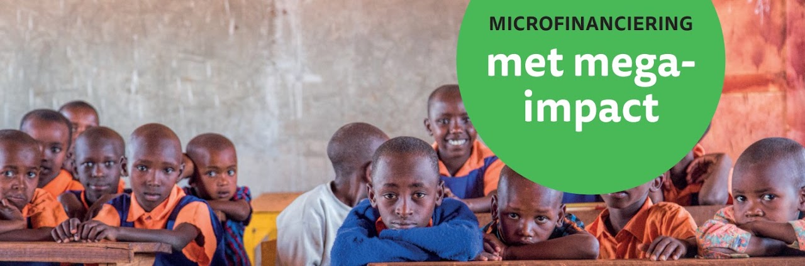
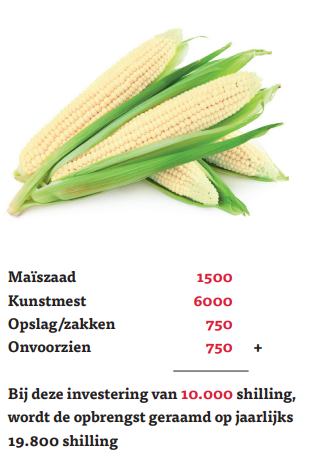

Projecten › Project Maïszaad
Project Maïszaad Afgerond
Update 2026: dit project is beëindigd. Aan de maïsprojecten is helaas een einde gekomen. De risico's van het verbouwen, oogsten en de opbrengst van maïs, en niet te vergeten de onberekenbare weersomstandigheden, bleken te groot. Na drie projecten hebben we besloten hiermee te stoppen. Het ligt wel in onze bedoeling om in de toekomst nog eens goed te onderzoeken of we iets met landbouw kunnen doen (productie, oogst, opslag, verhuur, verkoop). In het gebied rondom Kiminini is veel veeteelt en akkerbouw. Hieronder leest u hoe het project is verlopen.
Veel gezinnen in Kiminini, op het platteland van Kenia, beschikken over een stukje grond rond hun hut. De grond ligt meestal braak omdat de arme bewoners geen geld hebben voor goed zaad of plantgoed. Dat is jammer, want het klimaat leent zich uitstekend voor de verbouw van maïs, en maïs is redelijk eenvoudig te zaaien en te oogsten.

Het plan
Stichting Matumaini wilde met dit project 100 gezinnen voorzien van maïszaad. Daarmee kunnen ze zelf een inkomen verdienen, en een deel van de oogst kan dienen als voedsel voor het gezin.
Elk gezin dat meedoet, verbindt zich voor vier jaar aan het programma en verklaart zich bereid om ook andere gezinnen te begeleiden. Vooral in de opstartfase krijgen de bewoners ondersteuning van ervaren lokale boeren. In het begin ontvangen de gezinnen volledige financiële ondersteuning; jaarlijks wordt de toelage afgebouwd, omdat ze dankzij de opbrengst steeds meer over een eigen inkomen beschikken. Binnen vier jaar zijn ze dan in staat om zelf op kleine schaal producten te verbouwen.
Microfinanciering met een mega-impact op het dagelijks leven van eenvoudige Kenianen.
Vicieuze cirkel van armoede doorbreken
Met een gift van € 200, uitgesmeerd over vier jaar, kunnen we een gezin een heel eind op weg helpen naar zelfstandigheid. Met uw steun helpt u de bevolking van Kiminini de vicieuze cirkel van armoede te doorbreken.

Update september 2024
Ons maïsproject heeft een nieuwe impuls gekregen. Omdat het moeilijk bleek om gezinnen via microkrediet mee te laten doen, hebben we in overleg met de lokale (kerk)leiders besloten het anders aan te pakken. We huren een stuk land waarop een bevriende boer maïs zaait. Lokale mensen krijgen de gelegenheid om gedurende het seizoen arbeid te verrichten, bijvoorbeeld onkruid wieden, waarvoor zij loon ontvangen. Wie ook meewerkt aan de oogst, deelt daar voor een klein percentage in mee. Zo hebben zij in ieder geval een deel van het jaar de mogelijkheid om geld voor levensonderhoud te verdienen.
Update juli 2021
In januari 2020 is dit project concreet van start gegaan met de eerste vier gezinnen. Bij een lokale boer hebben we een stuk land gehuurd, er is maïszaad ingekocht en gezaaid en de nodige kunstmest aangeschaft. De gezinnen zorgen zelf voor het onderhoud van het land (meestal de vrouwen, bijgestaan door de kinderen) en helpen bij het oogsten.
Helaas werd 2020 een heel slecht oogstjaar. Velen zullen zich de berichten herinneren over de sprinkhanenplagen in diverse Afrikaanse landen; ook Kenia is hier zwaar door getroffen. De oorspronkelijke bedoeling om per jaar 25% steun af te bouwen en een deel van de opbrengst te herinvesteren in nieuw zaad hebben we voor dit eerste jaar los moeten laten. Er was nagenoeg geen oogst.
In januari 2021 zijn we doorgegaan met dezelfde vier gezinnen en hebben we het project uitgebreid met twee extra gezinnen. Voor de huur van het land is 20.000 KES geschonken en voor zaad, kunstmest, huur van machines en overige zaken 19.000 KES; samen ruim 300 euro. Een concreet teken van hoop voor deze zes gezinnen!
Steun onze lopende projecten
Dit project is afgerond, maar ons werk in Kiminini gaat door: het naaiatelier, de sponsoring van tienerstudenten en de steun aan gezinnen en de kerkgemeenschap.
Shukrani! Bedankt!